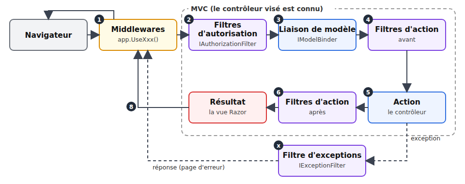
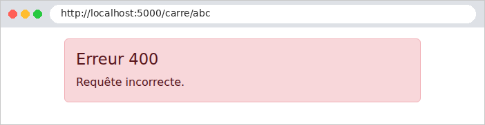
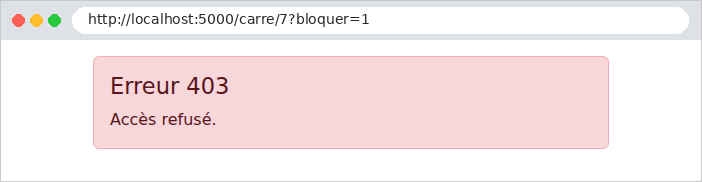
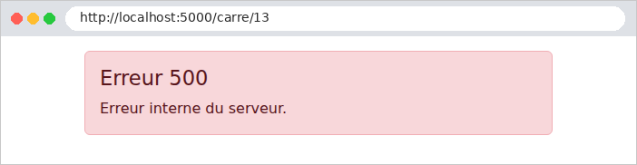

7. Le cycle de vie d'une requête
Entre l'arrivée d'une requête et l'exécution de l'action, [ASP.NET Core] fait intervenir plusieurs types d'objets, chacun avec un rôle précis. Nous en avons déjà rencontré : les middlewares ([UseStaticFiles], [UseRequestLocalization], le middleware de l'exemple 23), la liaison de modèle ([IModelBinder], exemple 12). La partie MVC ajoute des filtres, qui s'exécutent autour de l'action. L'étude de cas utilise chacun d'eux :

Objet | Rôle | Dans l'étude de cas |
middleware | préparer la requête ; ne connaît pas encore l'action | fichiers statiques, langue, authentification (lecture du jeton), pages d'erreur |
filtre d'autorisation | autoriser ou refuser l'accès à l'action | [[Authorize]], [[Authorize(Roles = ...)]] |
liaison de modèle | convertir et valider les paramètres | les formulaires, [ModelState] |
filtre d'action | du code avant et après l'action | (non utilisé : les services et la classe mère des vues suffisent) |
filtre d'exceptions | transformer une exception en réponse | session expirée : redirection vers /login |
7.1. Exemple 24 : les étapes du traitement d'une requête
L'exemple 24 a une action, qui calcule le carré d'un nombre, et un objet de chaque type. Chacun écrit une ligne dans la console : on voit ainsi dans quel ordre ils interviennent.
| 24-cycle-de-vie/
├── Controllers/
│ ├── CalculController.cs
│ └── ErreurController.cs
├── Filtres/
│ ├── BloquerAttribute.cs
│ ├── ChronoAttribute.cs
│ ├── EntierBinder.cs
│ ├── JournalMiddleware.cs
│ └── PageErreurFilter.cs
├── Views/
│ ├── Calcul/
│ │ └── Resultat.cshtml
│ ├── Shared/
│ │ ├── _Layout.cshtml
│ │ └── Erreur.cshtml
│ └── _ViewStart.cshtml
├── appsettings.json
├── Exemple24.csproj
└── Program.cs
|
Le fichier [Filtres/JournalMiddleware.cs] :
| namespace Exemple24.Filtres;
// un middleware écrit sous forme de classe : il reçoit la suite du pipeline
// (next) dans son constructeur, et traite chaque requête dans InvokeAsync
public class JournalMiddleware(RequestDelegate next)
{
public async Task InvokeAsync(HttpContext contexte)
{
Console.WriteLine();
Console.WriteLine($"--- {contexte.Request.Method} {contexte.Request.Path}{contexte.Request.QueryString}");
Console.WriteLine("1. middleware (avant)");
await next(contexte); // toute la suite : routage, filtres, action, vue
Console.WriteLine($"8. middleware (après : code {contexte.Response.StatusCode})");
}
}
|
- ligne 5 : un middleware peut être une classe. Il reçoit dans son constructeur un [RequestDelegate] : la suite du pipeline (les middlewares suivants, puis MVC) ;
- ligne 7 : la méthode [InvokeAsync] est appelée pour chaque requête ;
- ligne 12 : le middleware appelle la suite, et attend qu'elle ait fini. S'il ne l'appelait pas, la requête s'arrêterait là (il devrait alors fabriquer lui-même la réponse). Le code placé avant cet appel s'exécute à l'aller, celui placé après, au retour : le middleware « enveloppe » tout le reste, et voit le code de statut final de la réponse.
Le fichier [Filtres/BloquerAttribute.cs] :
| using Microsoft.AspNetCore.Mvc;
using Microsoft.AspNetCore.Mvc.Controllers;
using Microsoft.AspNetCore.Mvc.Filters;
namespace Exemple24.Filtres;
// un filtre d'AUTORISATION : il décide si l'action peut être exécutée.
// C'est aussi un attribut : on le pose sur un contrôleur ou une action.
public class BloquerAttribute : Attribute, IAuthorizationFilter
{
public void OnAuthorization(AuthorizationFilterContext contexte)
{
// le filtre connaît l'action visée, contrairement au middleware
var action = (ControllerActionDescriptor)contexte.ActionDescriptor;
Console.WriteLine($"2. filtre d'autorisation (action visée : {action.ActionName})");
if (contexte.HttpContext.Request.Query.ContainsKey("bloquer"))
{
// fixer Result court-circuite la suite : ni liaison, ni action
contexte.Result = new StatusCodeResult(StatusCodes.Status403Forbidden);
}
}
}
|
- ligne 9 : un filtre d'autorisation implémente [IAuthorizationFilter]. La classe dérive aussi de [Attribute] : on pourra la poser, entre crochets, sur un contrôleur ou une action ;
- lignes 14-15 : contrairement au middleware, le filtre connaît l'action visée ([ActionDescriptor]). C'est ce qui permet à l'attribut [[Authorize(Roles = "ADMIN")]] (chapitre suivant) de ne protéger que certaines actions ;
- lignes 16-19 : un filtre refuse la requête en fixant [contexte.Result] : la suite (liaison, action) n'est pas exécutée, et ce résultat devient la réponse. Ici, une réponse 403 (accès refusé), sans contenu.
Le fichier [Filtres/EntierBinder.cs] :
| using Microsoft.AspNetCore.Mvc.ModelBinding;
namespace Exemple24.Filtres;
// la liaison de modèle d'un paramètre entier (cf. exemple 12)
public class EntierBinder : IModelBinder
{
public Task BindModelAsync(ModelBindingContext contexte)
{
var valeur = contexte.ValueProvider.GetValue(contexte.ModelName).FirstValue;
Console.WriteLine($"3. liaison de modèle (valeur reçue : \"{valeur}\")");
if (int.TryParse(valeur, out var entier))
{
contexte.Result = ModelBindingResult.Success(entier);
}
else
{
contexte.ModelState.AddModelError(contexte.ModelName, $"\"{valeur}\" n'est pas un nombre entier.");
}
return Task.CompletedTask;
}
}
|
Une liaison de modèle personnalisée, comme celles de l'exemple 12. Une valeur invalide n'arrête rien : l'erreur est notée dans [ModelState], et c'est l'action qui décide (ligne 18).
Le fichier [Filtres/ChronoAttribute.cs] :
| using System.Diagnostics;
using Microsoft.AspNetCore.Mvc.Filters;
namespace Exemple24.Filtres;
// un filtre d'ACTION : du code avant et après l'action.
// ActionFilterAttribute : une classe du framework, dont on redéfinit les méthodes utiles
public class ChronoAttribute : ActionFilterAttribute
{
private const string Cle = "chrono";
public override void OnActionExecuting(ActionExecutingContext contexte)
{
// les paramètres de l'action sont déjà liés : le filtre peut les lire
Console.WriteLine($"4. filtre d'action (avant ; paramètres : {string.Join(", ", contexte.ActionArguments.Values)})");
contexte.HttpContext.Items[Cle] = Stopwatch.StartNew();
}
public override void OnActionExecuted(ActionExecutedContext contexte)
{
var chrono = (Stopwatch)contexte.HttpContext.Items[Cle]!;
// contexte.Exception : l'exception éventuellement levée par l'action
var issue = contexte.Exception is null ? "" : $", exception {contexte.Exception.GetType().Name}";
Console.WriteLine($"6. filtre d'action (après, {chrono.ElapsedMilliseconds} ms{issue})");
}
}
|
- ligne 8 : un filtre d'action. [ActionFilterAttribute] est une classe du framework qui implémente déjà les interfaces nécessaires : on redéfinit ([override]) les méthodes utiles ;
- lignes 12-16 : [OnActionExecuting] s'exécute avant l'action. La liaison de modèle a déjà eu lieu : les paramètres de l'action sont disponibles ([ActionArguments]). On démarre un chronomètre ([Stopwatch]), rangé dans [HttpContext.Items] (portée requête, cf. chapitre 6) ;
- lignes 19-24 : [OnActionExecuted] s'exécute après l'action. Si l'action a levé une exception, elle est disponible dans [contexte.Exception]. Un filtre d'action peut aussi remplacer le résultat de l'action ([contexte.Result]).
Le fichier [Filtres/PageErreurFilter.cs] :
| using Microsoft.AspNetCore.Mvc;
using Microsoft.AspNetCore.Mvc.Filters;
using Microsoft.AspNetCore.Mvc.ModelBinding;
using Microsoft.AspNetCore.Mvc.ViewFeatures;
namespace Exemple24.Filtres;
// un filtre d'EXCEPTIONS : il transforme une exception en réponse
public class PageErreurFilter(IModelMetadataProvider metadonnees) : IExceptionFilter
{
public void OnException(ExceptionContext contexte)
{
Console.WriteLine($"x. filtre d'exceptions ({contexte.Exception.GetType().Name} : {contexte.Exception.Message})");
// au lieu de la page d'erreur par défaut, notre vue Erreur, avec le code 500
contexte.Result = new ViewResult
{
ViewName = "Erreur",
StatusCode = StatusCodes.Status500InternalServerError,
ViewData = new ViewDataDictionary(metadonnees, contexte.ModelState) { Model = 500 },
};
contexte.ExceptionHandled = true; // l'exception est traitée : elle ne remonte pas plus loin
}
}
|
- ligne 9 : un filtre d'exceptions implémente [IExceptionFilter]. Il reçoit les exceptions levées par la liaison de modèle, les filtres d'action et l'action. C'est un service : il reçoit par injection l'objet [IModelMetadataProvider], nécessaire pour fabriquer le dictionnaire [ViewData] d'une vue ;
- lignes 15-20 : au lieu de la page d'erreur par défaut, le filtre fabrique une page HTML : la vue [Erreur], avec le code 500. C'est ce que fait la méthode [View] d'un contrôleur, écrit ici à la main ;
- ligne 21 : l'exception est déclarée traitée : elle ne remonte pas plus loin.
Le fichier [Program.cs] :
| using System.Text.Encodings.Web;
using System.Text.Unicode;
using Exemple24.Filtres;
using Microsoft.Extensions.FileProviders;
var builder = WebApplication.CreateBuilder(args);
builder.Services.AddControllersWithViews(options =>
{
// un filtre GLOBAL : il s'applique à toutes les actions de l'application
options.Filters.Add<PageErreurFilter>();
});
builder.Services.AddSingleton(HtmlEncoder.Create(UnicodeRanges.All));
var app = builder.Build();
// les middlewares s'exécutent dans l'ordre où ils sont ajoutés
app.UseMiddleware<JournalMiddleware>();
// une réponse d'erreur SANS contenu (400, 403, 404...) : on ré-exécute la
// requête avec l'adresse /erreur/{code}, qui fabrique une page
app.UseStatusCodePagesWithReExecute("/erreur/{0}");
app.UseStaticFiles(new StaticFileOptions
{
FileProvider = new PhysicalFileProvider(Path.GetFullPath(Path.Combine(builder.Environment.ContentRootPath, "..", "commun", "bootstrap"))),
RequestPath = "/bootstrap",
});
app.MapControllers();
app.Run();
|
- ligne 10 : un filtre global s'applique à toutes les actions de l'application. On l'ajoute aux options de MVC ;
- ligne 17 : un middleware de classe s'ajoute par [UseMiddleware]. Les middlewares s'exécutent dans l'ordre où ils sont ajoutés : celui-ci est le premier, il voit donc passer toutes les requêtes ;
- ligne 20 : un middleware du framework. Quand une réponse d'erreur (code 400 à 599) n'a pas de contenu, il ré-exécute la requête avec l'adresse [/erreur/{code}] (le [{0}] est remplacé par le code), et renvoie la page ainsi obtenue, en gardant le code d'erreur. C'est ainsi que les réponses 403 du filtre d'autorisation, 400 de l'action et 404 du routage deviennent des pages HTML.
Le fichier [Controllers/CalculController.cs] :
| using Exemple24.Filtres;
using Microsoft.AspNetCore.Mvc;
namespace Exemple24.Controllers;
// deux filtres posés sur le contrôleur : ils s'appliquent à toutes ses actions
[Bloquer]
[Chrono]
public class CalculController : Controller
{
[HttpGet("carre/{n}")]
public IActionResult Carre([ModelBinder(typeof(EntierBinder))] int n)
{
Console.WriteLine($"5. action Carre({n}) ; modèle valide : {ModelState.IsValid}");
if (!ModelState.IsValid)
{
return BadRequest(); // une 400 sans contenu : cf. UseStatusCodePagesWithReExecute
}
if (n == 13)
{
throw new InvalidOperationException("13 porte malheur"); // une erreur « imprévue »
}
return View("Resultat", n * n);
}
}
|
- lignes 7-8 : deux filtres posés sur le contrôleur : ils s'appliquent à toutes ses actions (on peut aussi les poser sur une seule action) ;
- ligne 12 : la liaison personnalisée du paramètre ;
- lignes 15-17 : un paramètre invalide : une réponse 400 sans contenu ;
- lignes 19-21 : une erreur « imprévue », pour voir le filtre d'exceptions à l'œuvre.
Le fichier [Controllers/ErreurController.cs] :
| using Microsoft.AspNetCore.Mvc;
namespace Exemple24.Controllers;
public class ErreurController : Controller
{
// [Route] sans méthode HTTP : la requête ré-exécutée garde sa méthode d'origine
[Route("erreur/{code:int}")]
public IActionResult Afficher(int code)
{
Console.WriteLine($"7. page d'erreur {code} (requête ré-exécutée)");
Response.StatusCode = code; // la page garde le code d'erreur
return View("Erreur", code);
}
}
|
- ligne 8 : l'action de la page d'erreur. [[Route]], sans méthode HTTP, accepte toutes les méthodes : une requête POST ré-exécutée reste une requête POST ;
- ligne 12 : la page garde le code d'erreur d'origine.
Le fichier [Views/Shared/Erreur.cshtml] :
| @* la page d'erreur ; son modèle : le code d'erreur *@
@model int
@{
var message = Model switch
{
400 => "Requête incorrecte.",
403 => "Accès refusé.",
404 => "Page introuvable.",
_ => "Erreur interne du serveur.",
};
}
<div class="alert alert-danger">
<h1 class="h4">Erreur @Model</h1>
<p class="mb-0">@message</p>
</div>
|
- lignes 4-10 : une expression switch [C#] : elle rend la valeur de la première branche dont le motif correspond au modèle. [_] correspond à tout le reste. La vue est dans [Views/Shared] : elle est trouvée quel que soit le contrôleur ([CalculController] pour le filtre d'exceptions, [ErreurController] sinon).
Cinq requêtes : un calcul normal (http://localhost:5000/carre/7), un paramètre invalide ([/carre/abc]), une requête bloquée par le filtre d'autorisation ([/carre/7?bloquer=1]), l'erreur imprévue ([/carre/13]) et une adresse inconnue ([/inconnue]). La console du serveur :
| --- GET /carre/7
1. middleware (avant)
2. filtre d'autorisation (action visée : Carre)
3. liaison de modèle (valeur reçue : "7")
4. filtre d'action (avant ; paramètres : 7)
5. action Carre(7) ; modèle valide : True
6. filtre d'action (après, 0 ms)
8. middleware (après : code 200)
--- GET /carre/abc
1. middleware (avant)
2. filtre d'autorisation (action visée : Carre)
3. liaison de modèle (valeur reçue : "abc")
4. filtre d'action (avant ; paramètres : )
5. action Carre(0) ; modèle valide : False
6. filtre d'action (après, 0 ms)
7. page d'erreur 400 (requête ré-exécutée)
8. middleware (après : code 400)
--- GET /carre/7?bloquer=1
1. middleware (avant)
2. filtre d'autorisation (action visée : Carre)
7. page d'erreur 403 (requête ré-exécutée)
8. middleware (après : code 403)
--- GET /carre/13
1. middleware (avant)
2. filtre d'autorisation (action visée : Carre)
3. liaison de modèle (valeur reçue : "13")
4. filtre d'action (avant ; paramètres : 13)
5. action Carre(13) ; modèle valide : True
6. filtre d'action (après, 0 ms, exception InvalidOperationException)
x. filtre d'exceptions (InvalidOperationException : 13 porte malheur)
8. middleware (après : code 500)
--- GET /inconnue
1. middleware (avant)
7. page d'erreur 404 (requête ré-exécutée)
8. middleware (après : code 404)
|
On lit dans ce journal :
- l'ordre des étapes : middleware, filtre d'autorisation, liaison de modèle, filtre d'action (avant), action, filtre d'action (après), et de nouveau le middleware, qui voit le code final de la réponse ;
- le filtre d'autorisation qui refuse la requête court-circuite tout le reste de MVC (pas de liaison, pas d'action) ;
- un paramètre invalide n'empêche pas l'exécution de l'action : c'est elle qui décide, d'après [ModelState] (cf. exemple 09) ;
- une exception de l'action est confiée au filtre d'exceptions, qui fabrique la réponse ;
- une réponse d'erreur sans contenu (400, 403, 404) est transformée en page par la ré-exécution de la requête (étape 7). Pour une adresse inconnue, MVC n'intervient même pas : aucune route ne correspond.
Les pages obtenues :



Vérifions que le code d'erreur est conservé :
| curl -i http://localhost:5000/carre/7?bloquer=1
|
| HTTP/1.1 403 Forbidden
Content-Type: text/html; charset=utf-8
<!doctype html>
<html lang="fr">
<head>
<meta charset="utf-8">
<title>Cycle de vie</title>
<link rel="stylesheet" href="/bootstrap/css/bootstrap.min.css">
</head>
<body>
<div class="container py-3">
<div class="alert alert-danger">
<h1 class="h4">Erreur 403</h1>
<p class="mb-0">Accès refusé.</p>
</div>
</div>
</body>
</html>
|
L'étude de cas combine ces mécanismes : [UseStatusCodePagesWithReExecute("/erreur/{0}")] et un contrôleur [ErreurController] pour les pages 400, 403 et 404 ; le middleware [UseExceptionHandler("/erreur/500")], qui ré-exécute de la même façon toute requête terminée par une exception non traitée ; et un filtre d'exceptions ([Web/HtmlExceptionFilter.cs]) pour un cas particulier : une session expirée n'affiche pas de page d'erreur mais redirige vers la page de connexion.